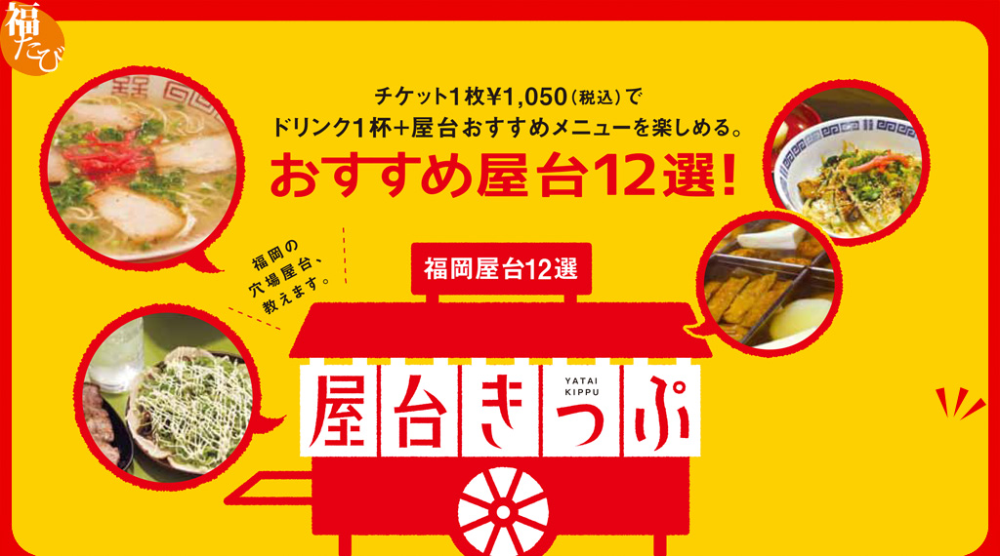
※観光案内所（天神・博多）でも購入できます
※購入は１枚一組となります
屋台一覧
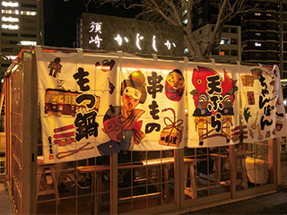
ハタチの女性大将！
女性ひとりでもくつろげるキレイ目屋台
かじしか
MENU
生ビール＋おまかせ串２本
詳細を見る
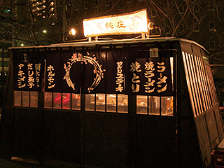
串焼きならココ！
博多座の出演者たちも常連
屋台 風来桃庄
MENU
ビール一杯＋串盛合せ4本か、ソフトドリンク一杯＋串盛合せ6本
詳細を見る
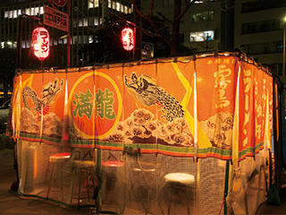
山笠男子もはまる
博多人情屋台
満龍
MENU
ビールor焼酎or日本酒一杯＋どて味噌＋おでん
詳細を見る
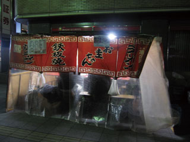
大将の美しい手さばきに感動！
鉄板焼き屋台
天神一丁目屋台 お圭ちゃん
MENU
ビール一杯＋明太卵焼き
詳細を見る
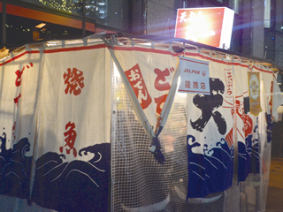
サクサク！揚げたて天ぷら屋台は大人の楽しみ
天ぷら屋台 天一
MENU
ビン酎ハイ一杯＋天ぷら５品盛り合せ
詳細を見る
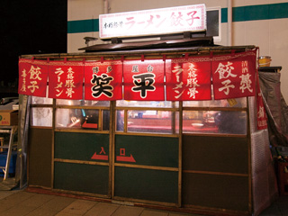
ヤミツキ必至！カリカリ羽根つき餃子をぜひ！
笑平
MENU
ラーメンor餃子orもつ煮＋全てのドリンクより1杯
詳細を見る
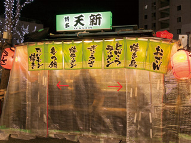
2色の豚骨ラーメンの美味しさを選べる楽しさ。
天新
MENU
串盛り合わせ2本＋ラーメンorネギまみれチャーシュー＋ソフトドリンク･焼酎･梅酒･生ビールより1杯
詳細を見る
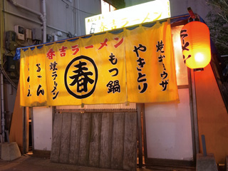
リーズナブルに大満足！タンタン麺ははずせない
春吉ラーメン
MENU
（焼きラーメンorラーメンorぶたおでん３種類）or（小鉢＋本日のオススメ）＋ドリンク
詳細を見る
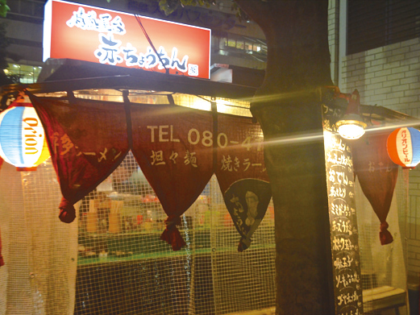
沖縄メニュー充実の情熱屋台！
情熱屋台 赤ちょうちん
MENU
ビール以外の飲み物＋韓国味噌豚漬焼
詳細を見る
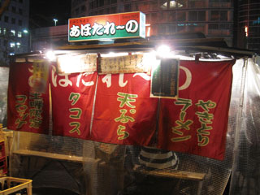
ユニークなメニューならココ！
50種類の充実メニュー
あほたれ～の
MENU
お好きなカクテル一杯＋タコス
詳細を見る
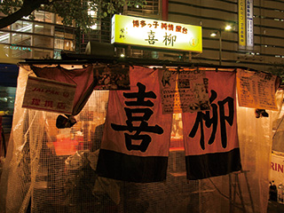
開店とともに席が埋まる人気店！
博多っ子純情屋台 喜柳
MENU
アルコール一杯＋モチモチ餃子ハーフ、大将のオススメがハーフで2品、1/2ラーメン
詳細を見る
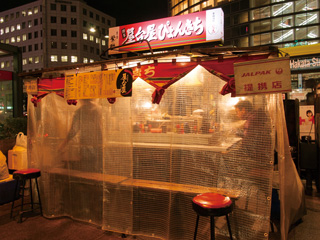
ビギナーでも気軽に入れる明るい人気屋台
ぴょんきち
MENU
餃子or明太餃子orシソ餃子＋サワー1杯（レモン・かぼす・梅）
詳細を見る
※観光案内所（天神・博多）でも購入できます
※購入は１枚一組となります
屋台MAP
MENU